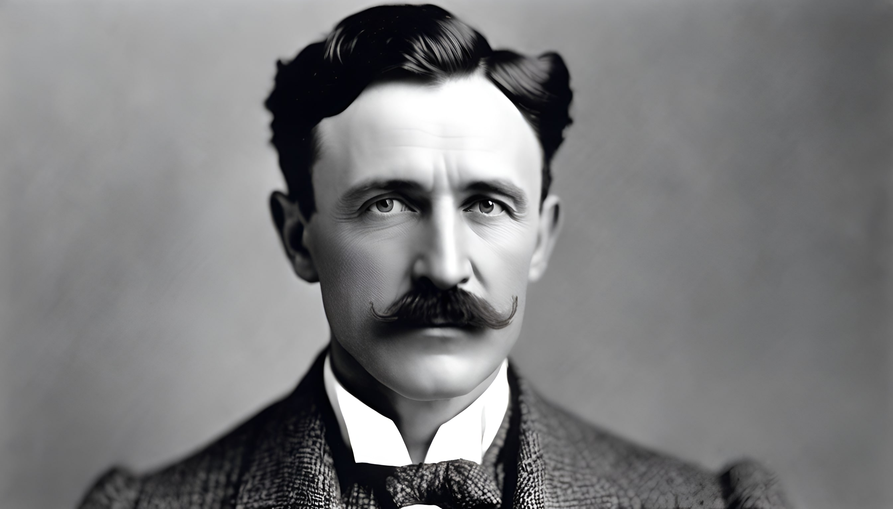
Ismerjük meg 'Victor Sterling'-et." Az 1950-es években egyaránt kreatív feltaláló és ügyes vállalkozó volt, megalapítva a neves ElectroniX elektronikai márkát. Forradalmi innovációi meghatározóvá váltak a high-tech elektronikában ebben az időszakban.
Victor Sterling szülei Amelia és Edward Sterling voltak. Mindketten oktatók voltak, elkötelezve magukat tanári hivatásuk mellett. Annak ellenére, hogy közepes középosztálybeli háttérből származtak, az oktatás iránti elkötelezettségük erős kíváncsiságot és szenvedélyt ösztönzött Victornak már korán a tanulás iránt.
Victor Sterling gyermekkorában lenyűgözte a készülékek és eszközök szétszerelése és újra összeszerelése. Órákat töltött rádiókkal, kis háztartási eszközökkel és bármilyen elektronikai eszközzel, amit csak a keze ügyébe került. Kíváncsisága arra ösztönözte, hogy felfedezze ezeknek a gépeknek a működését, fellobbantva benne az elektronika és áramkörök iránti érdeklődést. Ez a gyakorlatias kísérletezés és az elektronikával való korai érintkezés az elektronikai zseni jövőjének alapját fektette.
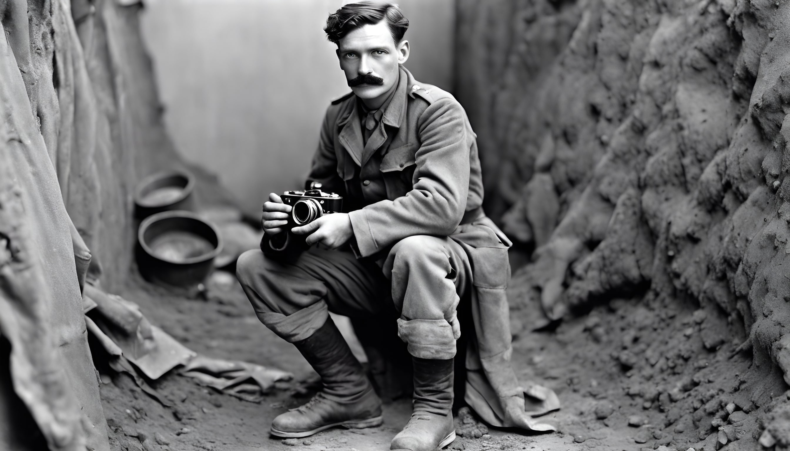
A Kiwi-Emu konfliktus frontvonalán tudósítva Victor Sterling elektronikai ismereteit használta fel annak érdekében, hogy ideiglenes kommunikációs rendszereket állítson fel, biztosítva ezzel a jelentések biztonságos és megbízható továbbítását. Különböző eszközöket és készülékeket improvizált rendelkezésre álló elektronikai alkatrészek felhasználásával, amelyek lehetővé tették a különböző egységek és a főhadiszállás közötti jobb kommunikációt. Az általa alkotott ideiglenes elektronikai megoldások nemcsak segítették a tudósítását, hanem javították a katonák kommunikációs hatékonyságát is a kihívást jelentő harctéri körülmények között.
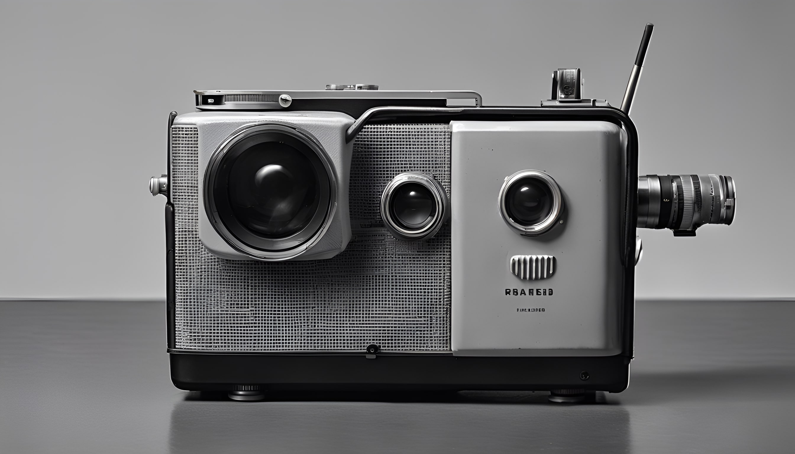
Victor Sterling szenvedélye az elektronika és a fotográfia iránt különleges alkotással koronázódott meg, az RC01-el. Ez a kézben tartható rádiókamera forradalmian új eszköz volt, amely nemcsak kiváló minőségű fényképeket tudott készíteni, hanem vezeték nélkül tovább is tudta őket küldeni más RC01-es egységeknek rádióhullámok segítségével. Ez a forradalmi technológia lehetővé tette a képek gyors és biztonságos átvitelét, átalakítva a fotók készítésének és megosztásának módját mind a újságírás terén, mind azon túl.
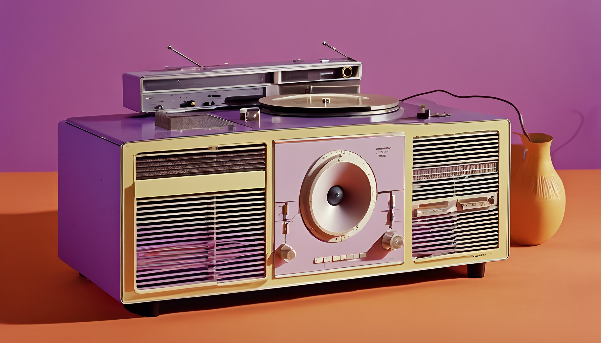
Az 1960-as években az ElecTroniX hatalmas sikereket ért el a TA01 cső erősítő, RR01 rádióvevő, TT01 lemezjátszó és TR01 szalagfelvevő bevezetésével, amelyek megalapozták híres Home Hi-Fi termékcsaládjukat. Az HA01 Home Audio integrált megoldás ezeket az egységeket egy kompakt szekrény méretű egységbe olvasztotta össze, forradalmasítva ezzel a házi szórakoztatást.
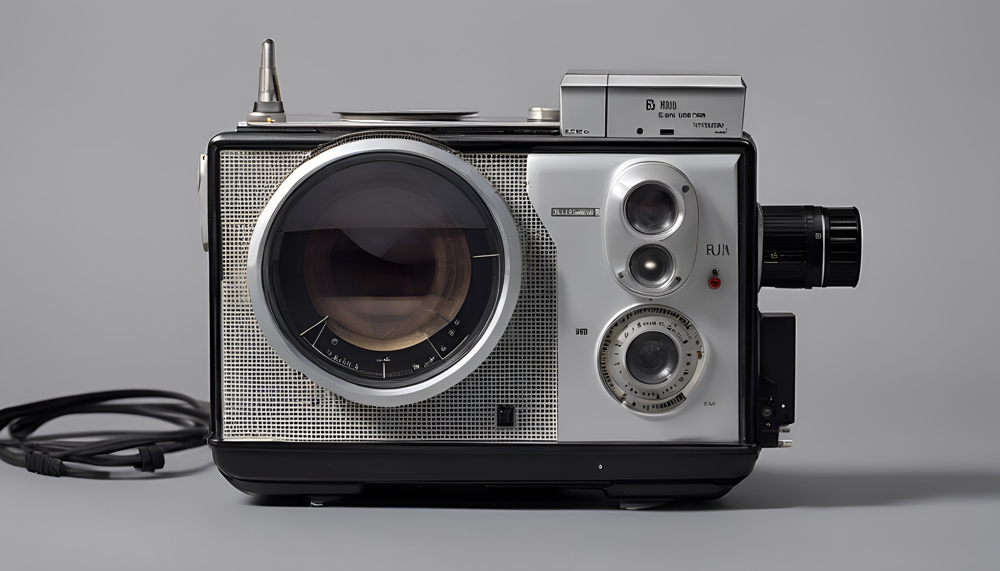
Eközben a RC terméksorozatuk jelentősen fejlődött. Az RC02 nagy ugrást jelentett a felbontás terén, kiváló minőségű képeket kínálva 192x128 felbontásban. Az ElecTroniX aztán úttörő módon miniaturizálta az RC03-at, csökkentve annak méretét egy aktatáskához képest, egy sokkal elegánsabb, kisebb verzióvá téve, és ezzel új mércéket állítva fel a hordozható vizuális technológia terén. Ez az innovációra való elkötelezettség erősítette meg az ElecTroniX hírnevét az otthoni szórakoztatás és a hordozható vizuális technológia élvonalában az évtized során.
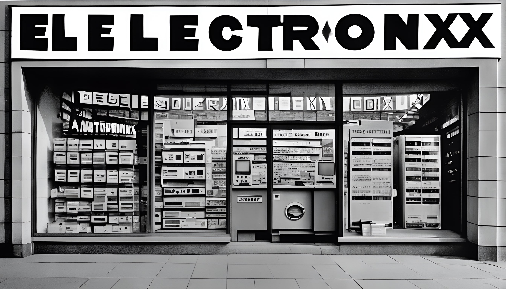
Egy korai újsághirdetése az RC03-nak
📰 Introducing the ElecTroniX RD03 - Your Visual Revolution!
📸 Snapshots of Tomorrow:
Capture life's moments like never before! The RC03 handheld radio camera brings you unparalleled clarity and precision. Say hello to high-resolution visuals, capturing every detail with finesse!
🌐 Wireless Wonders:
Beam your creativity to the world! Transmit your photos wirelessly to other RC03 units, making sharing moments effortless, no matter where you roam!
🚀 Leading the Innovation Wave:
ElecTroniX proudly presents the RC03 - the pinnacle of our quest for visual excellence. Explore a world of possibilities with this visionary device!
🔍 Unleash Your Vision:
Don't miss the chance to be a trendsetter! Swing by your nearest ElecTroniX store and dive into the future with the RD03. Elevate your visual storytelling game today!Caption for Image 2
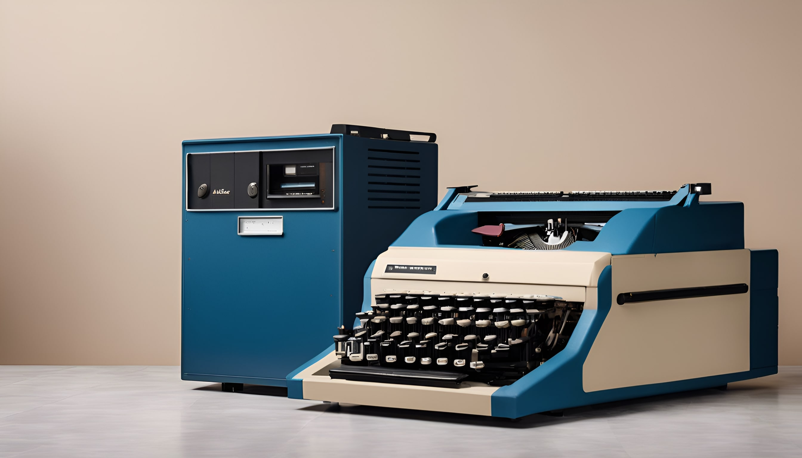
Az 1970-es években az ElecTroniX forradalmi lépéseket tett otthoni számítástechnikában! Az HC01 előtérbe került mint úttörő, dicsekedve a blinkenlights és a PT01 nyomtató írógép, ami egyben játékcsoda is volt. Ez a sokoldalú számítógép zökkenőmentesen integrálódott az RD vonallal és a Home Hi-Fi termékek Series 02-vel. Különösen érdemes megjegyezni, hogy az HC01 utódja, az HC02 bevezette a képernyőt, bár prémium áron, lehetővé téve az otthoni automatizálást az AT01 rendszerrel, ami a fényeket és készülékeket kezelte.
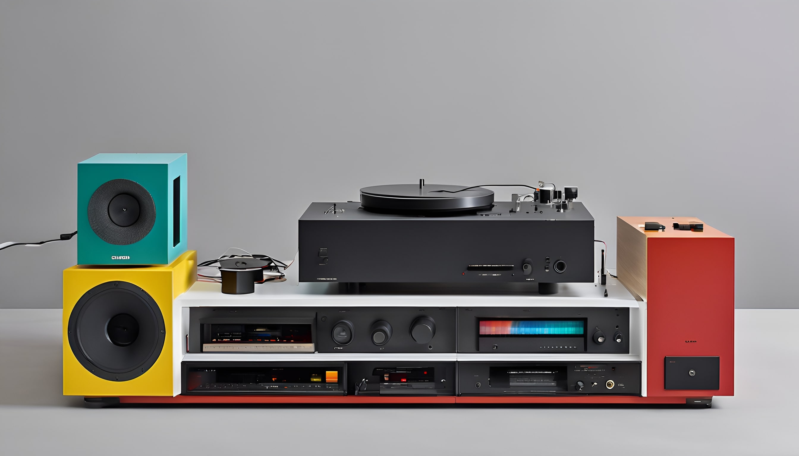
Az 1970-es években az ElecTroniX áttörést ért el, áttérve a TA01 csőerősítőről az RA02 tranzisztoros erősítőre. Ez jelentős eltérést jelentett a hagyományos csőtechnológiától, amivel az RA02 kiemelkedő termékké vált a Home Hi-Fi vonalban. Az RA02 bevezetése az HC számítógépek mellett és más innovációkkal együtt megerősítette az ElecTroniX elkötelezettségét a csúcstechnológia felé a termékeik teljes skáláján.
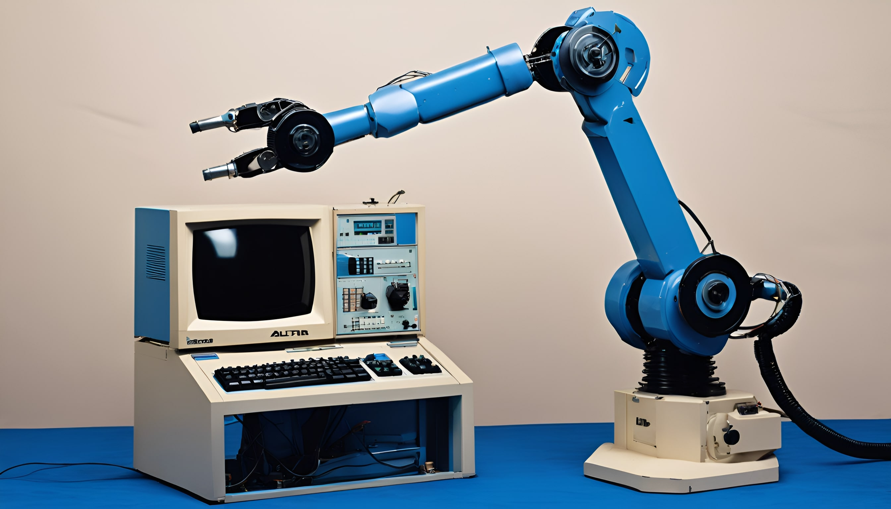
Az ElecTroniX további forradalmat hozott az iparágban az HC03-mal, egy újratervezett HC02-vel, ami kompatibilis volt az AA01 segédkarjával. Azonban sajnálatos balesetek merültek fel a robotkar kapcsán, aminek következtében visszaesések történtek, elbizonytalanítva az embereket a biztonsági aggályok miatt. Ennek ellenére az ElecTroniX továbbra is úttörő maradt az otthoni számítástechnika területén, folyamatosan kitolva a határokat és újradefiniálva a technológiai lehetőségeket.
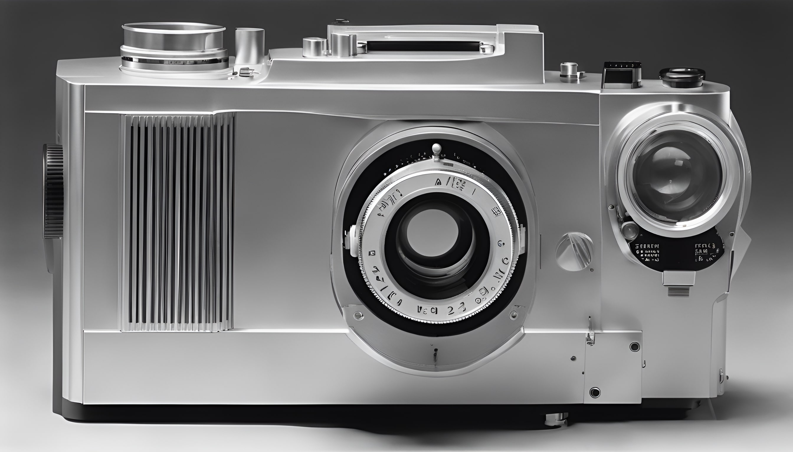
Az elektronika és otthoni számítástechnika területén elért fejlődésük mellett az ElecTroniX folyamatosan újított a vizuális technológia terén is. A 1950-es évektől kezdve kiterjedt analóg kamerákat vezettek be, majd később videokamerákba is beszálltak.
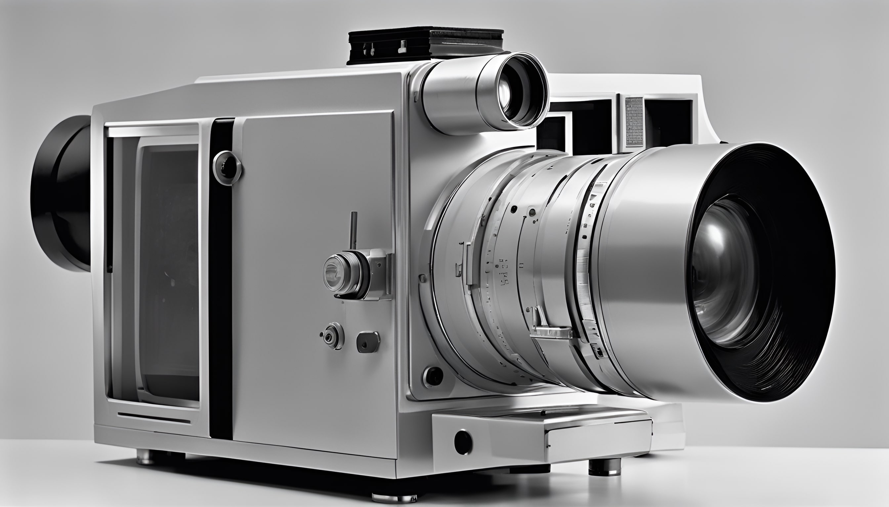
Az analóg kameráik palettája az AC01-gyel kezdődött, majd különböző modellekké fejlődött, mint például az AC02 és AC03, mindegyik változat javított optikával és funkciókkal. Az 1960-as évek végén az ElecTroniX forradalmi lépést tett a videotechnológia terén, kiadva első sorozatukat videokamerákból. Ezek közé tartozott a VC01 és VC02, amelyek úttörők voltak a videofelvételi képességek integrálásában hordozható eszközökbe.
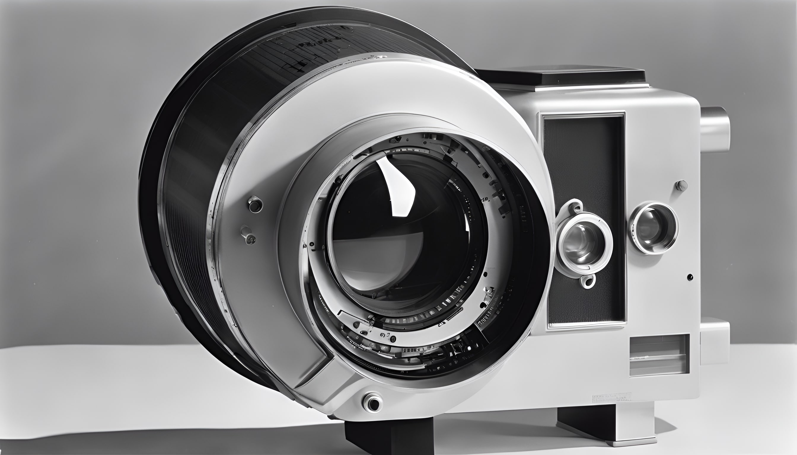
Az '70-es évek során az ElecTroniX finomította az analóg és videokamera sorozatait, elegánsabb dizájnokkal, fejlettebb funkciókkal és jobb képminőséggel, tovább erősítve jelenlétüket a vizuális technológia piacán.
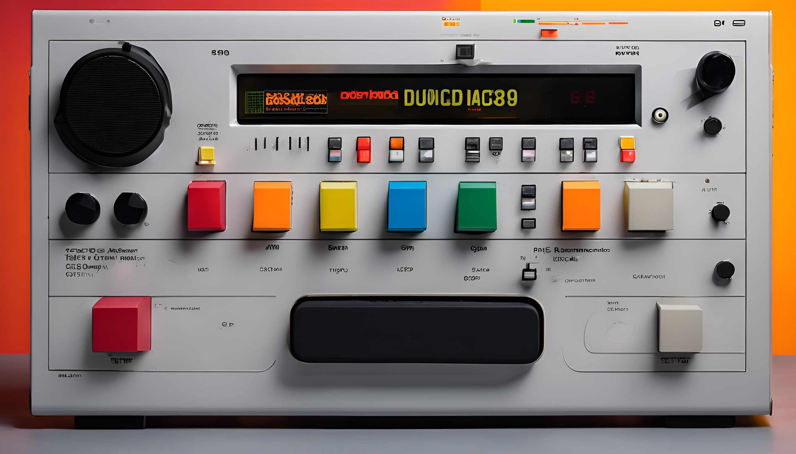
Az 1980-as évek az ElecTroniX számára a diverzifikált innováció időszaka volt. Új piacok felé nyitottak, bevezetve az analóg programozható szintetizátorokat (PS sorozat) és az analóg programozható dob gépeket (PD sorozat), forradalmasítva ezzel a zeneipart a csúcstechnológiás hangtechnológiájukkal.
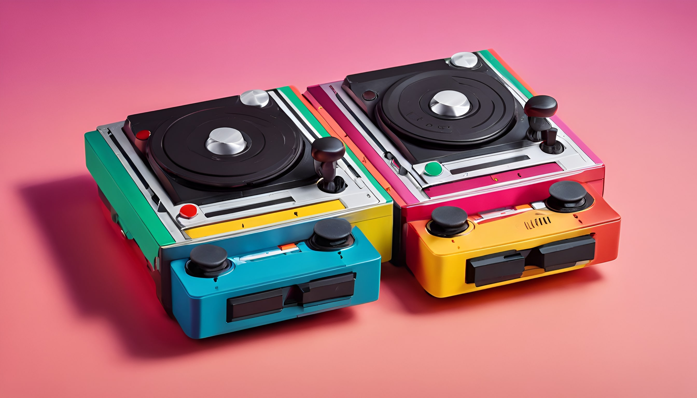
Egyidejűleg az ElecTroniX belépett a virágzó játékiparba a GG sorozattal, bemutatva szórakoztató technológia terén való jártasságukat. Az elszakadás a hagyományos névadástól a GG sorozatban lehetővé tette az ElecTroniX számára a játékkonzolok felé történő lépését, lefektetve ezzel az alapokat a későbbi játékfejlesztések számára.
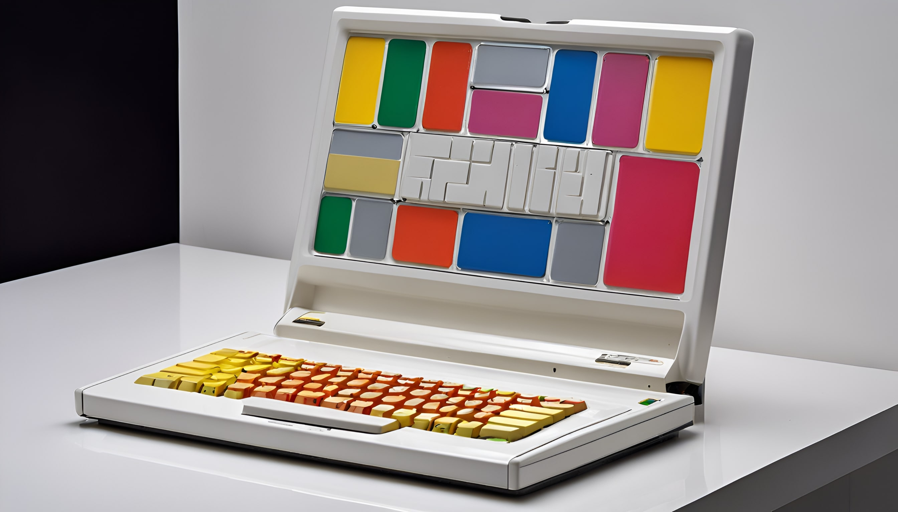
Továbbá az '80-as években az ElecTroniX az informatika terén is úttörő lépéseket tett. Előrukkoltak első hordozható számítógépükkel, a PC01-gyel, amely a hordozható számítási teljesítmény növekvő igényeinek felelt meg.
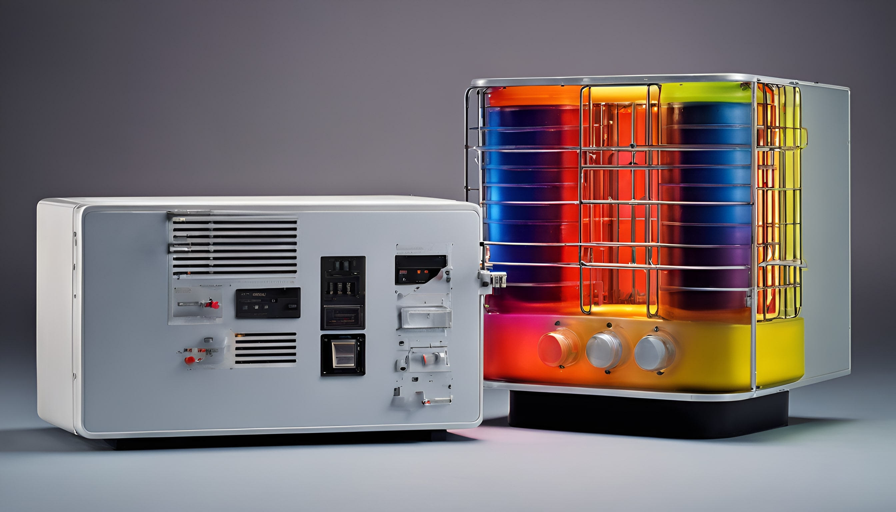
Egy valóban forradalmian új lépésben az ElecTroniX bemutatta az AR01-et, az első és egyetlen otthoni atomreaktort. Ez a miniaturizált reaktor, melyet műholdtechnológiából fejlesztettek ki, célja az volt, hogy hordozható atomenergia-megoldást nyújtson. Azonban biztonsági aggályok és szabályozási bonyodalmak miatt ez egyedi és rövid életű kísérlet maradt az otthoni atomenergia területén.
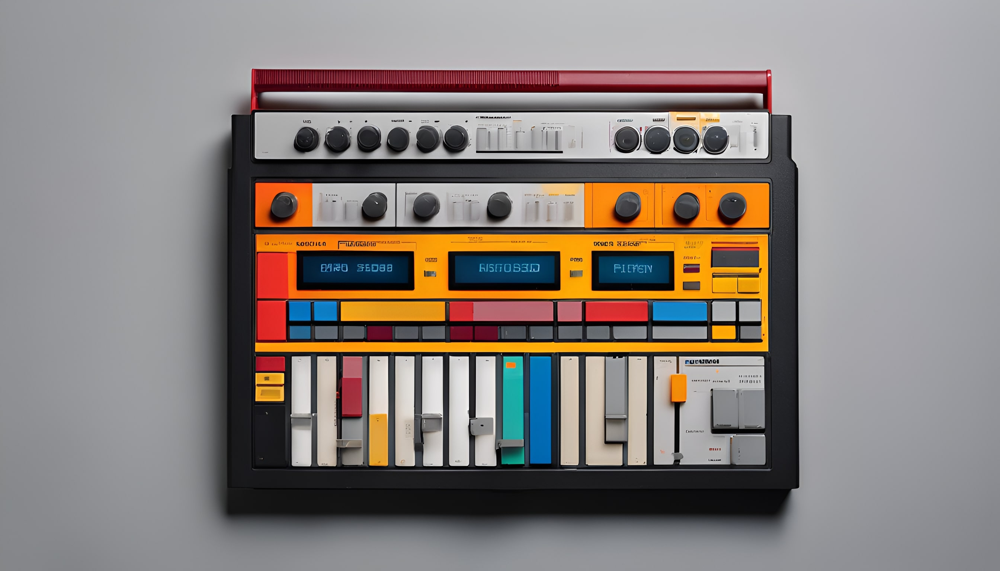
Az évtized során az ElecTroniX sokrétű vállalkozásai megmutatták elkötelezettségüket a technológiai határok feszegetése, termékportfóliójuk diverzifikálása és az innováció iránt különböző iparágakban.
Sterling halála az 1980-as évek végén jelentős veszteséget jelentett az ipar számára. Hiánya űrt hagyott az ElecTroniX látomásos vezetésében. A vállalat nehezen tudott alkalmazkodni a 90-es évek gyorsan változó technológiai környezetéhez.
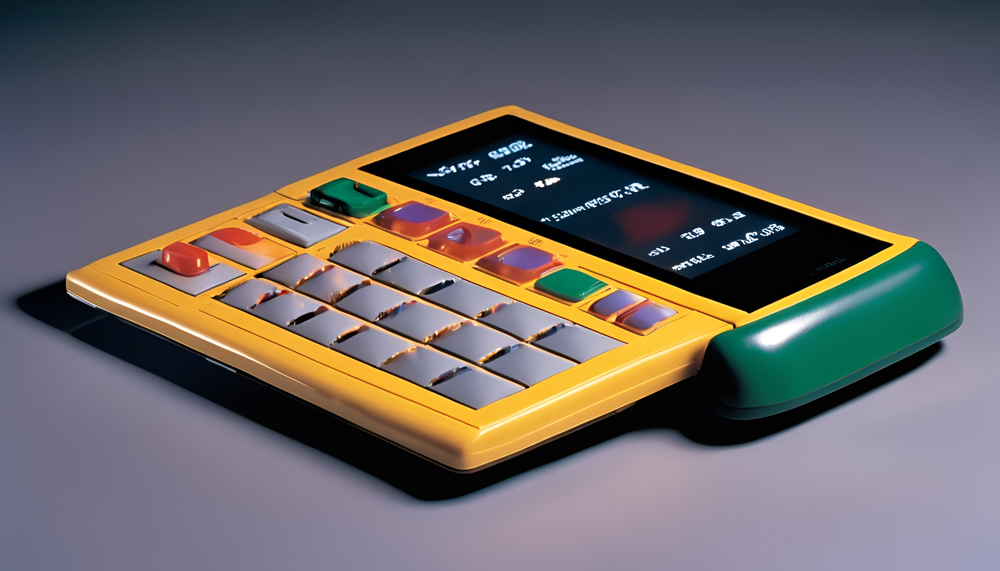
Az 1990-es évek viharosnak bizonyultak az ElecTroniX számára. A csökkenő eladások ellenére igyekeztek újjáéleszteni sorsukat az ambiciózus SD01 okoseszközzel. Ez a forradalmi minden egyben eszköz azt célozta, hogy átformálja a személyes elektronikai eszközök fogalmát, egyesítve egyetlen, bár tömör, kompakt csomagban a játékkonzol, számítógép, fényképezőgép, rádió, telefon és még sok más funkciót.
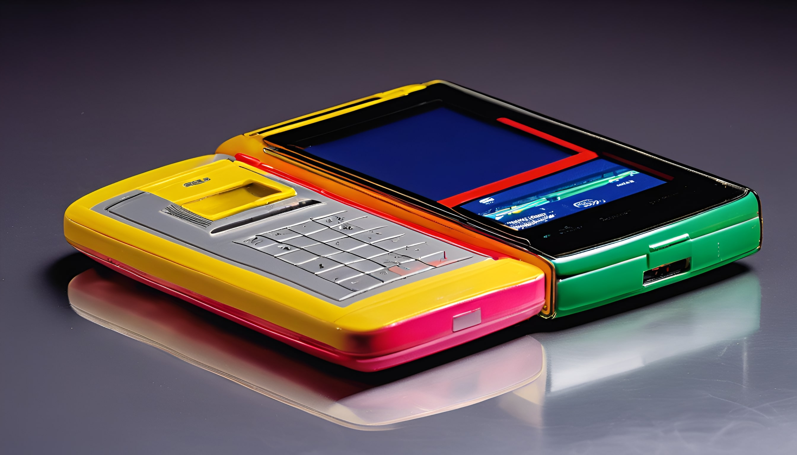
Az SD01 és SD02 azok innovatív jellemzői ellenére, hozzájárult az ElecTroniX gyorsabb hanyatlásához. A jelentős beruházás egy ilyen fejlett multifunkcionális eszköz fejlesztésébe és piacra dobásába, párosulva azzal, hogy nem sikerült jelentős piaci részesedést szereznie magának a magas ára és tisztának nem tűnő felhasználási esetek miatt, súlyosbította a vállalat pénzügyi gondjait. Az SD02 széles körű elfogadásának elmaradása további nyomást helyezett az ElecTroniX már csökkenő eladásaira, végül felgyorsítva annak hanyatlását. Ez az ambiciózus, ám sikertelen törekvés vált jelképévé a vállalat utolsó próbálkozásainak, hogy visszanyerje egykori fényét egy fejlődő és versengő piaci környezetben.
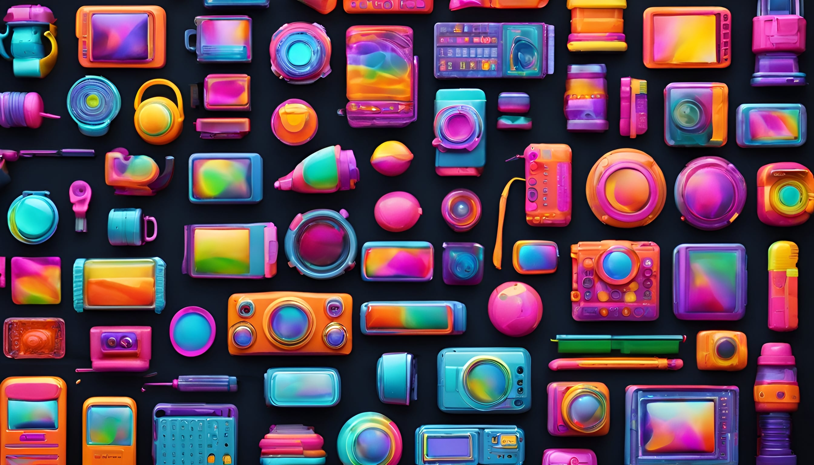
Az ElecTroniX márkanév jelenleg egy kínai vállalat a "Píanyi Wúyòng Huò Electronics" kezében van, amely inkább piaci nyomásokra, mint fogyasztói elégedettségre összpontosít. A "Píanyi Wúyòng Huò Electronics" felhasználja az ilyen módon felvásárolt márkanév, például az ElecTroniX-et, hogy agresszív marketingkampányokat folytasson, célozva arra, hogy alsóbb kategóriás elektronikai termékeit különböző piaci szegmensekbe nyomja, anélkül hogy előtérbe helyezné a fogyasztói igényeket vagy elégedettséget.
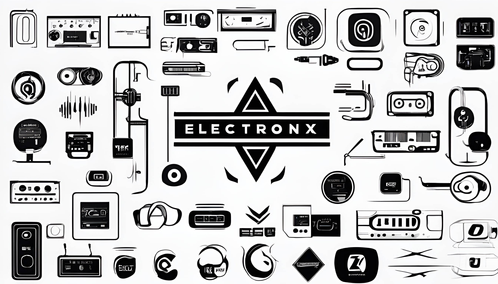
Köszönetet szeretnék kifejezni minden kedves látogatómnak, aki időt szentelt annak, hogy végigolvassa az ElectroniX nevű kitalált márkám történetét a weboldalamon. Nagyon fontos számomra a terméktervezés és az építészet világa, különösen pedig rajongok a régebbi elektronikai eszközökért. Az is a szenvedélyem, hogy a termékmenedzsment területén tanultam, bár jelenleg más területen dolgozom.
Fontos megjegyezni, hogy az összes szöveg és történet, amit olvashattok az oldalon, valamint még a képek is AI-generáltak. A szövegeket a ChatGPT 3.5, míg a képeket a Stable Diffusion XL 1.0 nevű modellek generálták. Kb. 8 órányi munkával és 400 generált képpel, ami összesen körülbelül 600MB adatot jelent.
Ezúton szeretném megköszönni mindenkinek, hogy időt szánt az oldalamra és a történetemre. A generált tartalom mögött álló technológia lenyűgöző, és remélem, hogy érdekesnek találtátok az általa létrehozott világot. A köszönet is természetesen generált, de az érzelmek és hálás köszönet mindig is valódiak maradnak.
Köszönettel,
[Te vagy a neved itt]
(\__/)
(='.'=)
(")_(")